8. Trip to the South of Spain
February 25 to March 7, 2022
Day 3, discover the towns of Córdoba
February 27, 2022

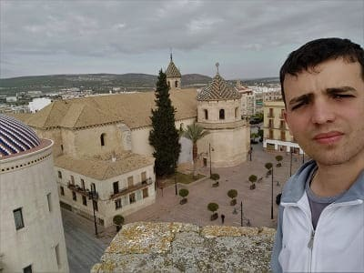
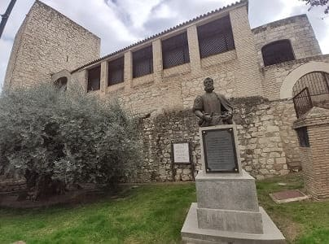

After having visited the town of Cabra, I had no choice but to visit Lucena, in case some Lusitanian finds me one day and having visited Cabra and not Lucena, since there are quarrels between these two towns since time immemorial. The highlight of Lucena is the Castillo del Moral where the city's archaeological museum is located.
When leaving, I would visit the church of San Mateo, which has one of the most beautiful chapels in all of Andalusia. This church was built on the ancient ruins of the main synagogue of Lucena, a temple of great reference due to the fact that the city housed an infrequent Jewish majority during the Hispano-Muslim period, as can be attested in the extensive Jewish necropolis found in 2006. No However, after the arrival of the Almohad Empire in 1138, the synagogue was converted into a mosque and, finally, in 1240 it was consecrated as a church after the conquest by Ferdinand III of Castile under the dedication of the Apostle Mateo, despite the fact that the structure was not modified. In 1498 it would be partially demolished and a new temple would be built on it. Much of its structure would be maintained, the masonry walls and part of the tower. As early as the 18th century, work began on the interior, with special mention to the tabernacle chapels, most important works of the Andalusian Baroque.
This church is presented in the following images.
It is also decorated with the coats of arms of the Dukes of Lucena. In addition to the town hall square, there are numerous religious buildings and palaces.
The convent of the Madre de Dios, the church of Santo Francisco, the church of Santo Domingo, the church of San Pedro Martir, the church of San Juan de Dios and the church of Nuestra Señora Carmen. Below these lines, the church of Santo Domingo and the church of Carmen.
There is also
the sanctuary of the Virgin of Araceli about 8 kilometers away, one of the Marian temples in Spain.
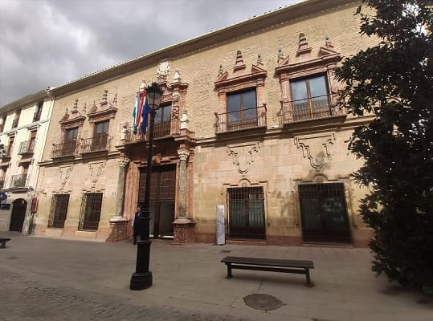
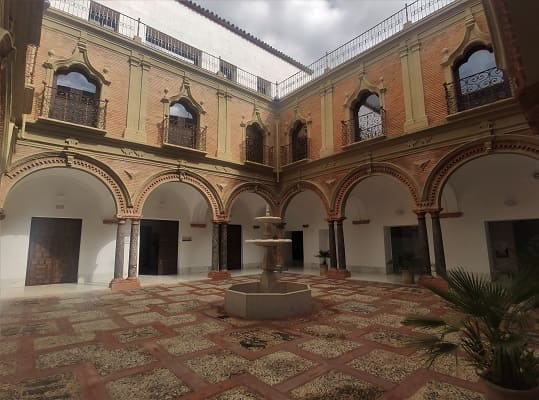
As civil works we have
the Palace of the Counts of Santa Ana, in the images where they hold numerous exhibitions and events. The palace was built during the 1730s and was completed during the second half of the 18th century. It has two patios. One with a large marble staircase with bronze railings. All the windows have exterior ornamentation as well as the patio arches. Very close to the palace we have
the Casa de los Mora. This was originally a convent but in the 19th century after the confiscations it would pass into private hands. It would have different owners and uses until it was acquired by the Lucena city council and given a cultural use.
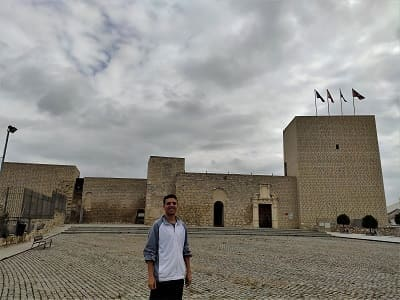
The next town to be visited
Baena I expected more from it. Despite being an important town, it does not have so many monuments. The best thing in the town is
La Plaza de la Constitución where the town hall is located, which is quite large and there are several good restaurants.
From afar,
the castle of Baena can be seen, which appears in the right image. Despite being large, its restoration has not been very successful since the materials used are of low quality and It looks very artificial and forced. Inside it hardly has an empty space for the most part.
If the town hall had forced the use of materials that were more similar to the originals and had filled the space with a tent or tower where archaeological objects found in the area could be located as a museum, it would have acquired greater importance.
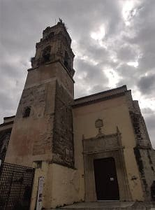
The religious buildings are
the church of Santa María Mayor. The first news of this temple, located in the highest part of the city, dates back to the 13th century. Due to its location, its importance in the town and its mention in documents of the time, it is believed that it could have occupied the site of a mosque; In fact, the tower that still remains looks like a Muslim minaret dating to the 9th century, although over time it has undergone logical transformations, among which we must mention the bell tower itself, which is a Baroque work.
Its plan has three naves, without a transept and separated by pointed arches that rest on Gothic pillars, typical of Cordoba architecture of the 16th century. The large gate that closes the Main Chapel stands out, being one of the most important in the province of Córdoba. Also the custody of gold and silver from the 18th century.
Near Baena on the way to Zuheros we can pass through a little-known town,
Luque. This town has an imposing church with a Mudejar roof, very pretty for the size of this town. It also has a defensive castle that is in full restoration and when it is finished due to the enclave where it is located, it would have an additional tourist attraction. Its opening date is scheduled for 2023.
Once in
Zuheros I would go to see if the tourist office could make a reservation to see
the Bat Cave, since I had not been able to contact them by phone during the day . This cave that has 5 daily visits is highly visited and the maximum number of people in the cave is 30 people to damage it as little as possible. The town is one of the most beautiful in Spain due to where it is located, in a rocky area where its old castle stands out, from which today the main wall and the keep remain. The beauty of this castle is that the rock was used as a natural wall and gives it an air of a movie. Another important building is the museum of popular customs. Once I had covered several of its streets, I set off towards the next town.
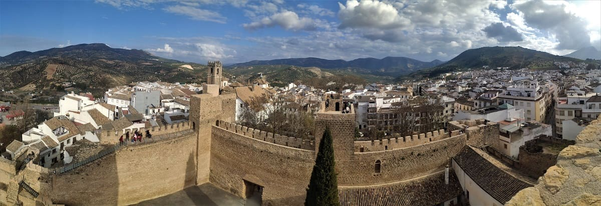
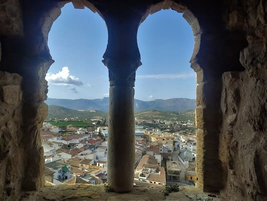
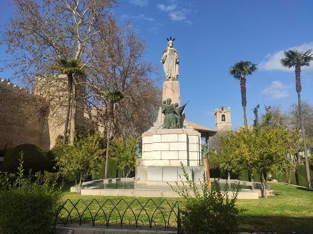
Priego de Córdoba, like Zuheros, is on the list of the most beautiful towns in Spain, however historically it has much more to offer. The castle is very large and has an interpretation center in the keep. Very close to the castle is
the church of Nuestra Señora de la Asunción, huge with a neoclassical style inside and a beautiful dome that does not envy the castle at all. Around the church, there are a series of alleys with Cordovan patios where it is worth walking and taking pictures. Calle de los jasmines stands out above the rest.
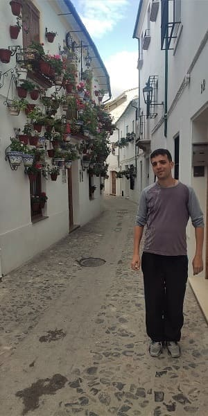
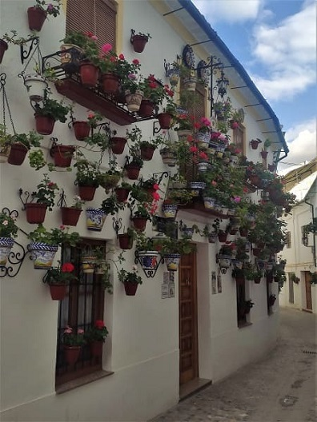
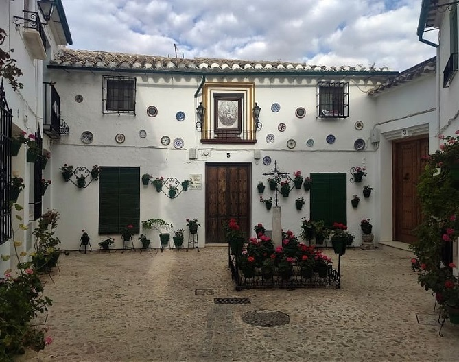
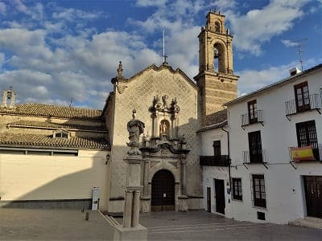
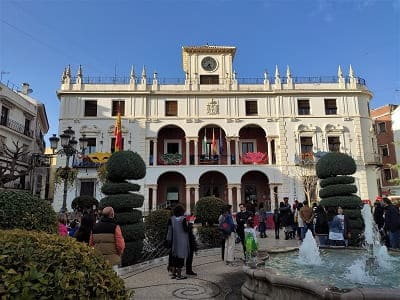
This town also has the
Las Reales Carnicerías building, a 16th-century building that served as the town's slaughterhouse and market. It has been recently restored and its spiral staircase and patio are famous. In addition to these unique buildings, it has important religious buildings such as
the church of San Nicasio de la Aurora which has numerous ornaments on the sides and paintings. This church is even more beautiful than that of the Assumption. In addition, there is
the church of San Francisco, of the same style but less royal.
Once seen, he would return to
Rute for the carnival. Rute is the town of Córdoba whose carnival celebrations are more important and people from different towns travel there. This rather large town does not have a unique heritage as the ancient town of Rute was destroyed in the wars between Arabs and Christians. However, it has numerous museums related to the gastronomy of the area such as the anise museum, the ham museum, the chocolate museum, the brandy museum, the sugar museum and the marzipan museum. Rute having a large industry related to pastry and livestock.
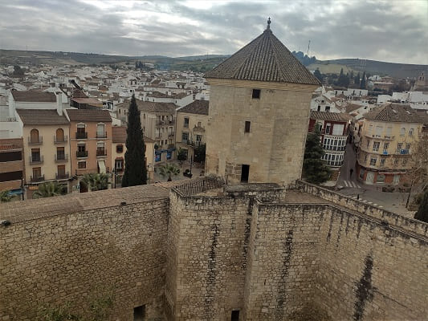
Castle of Moral, s.XI y church of San Mateo, s.XVI.
4
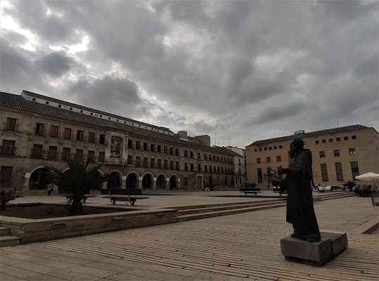
Square of constitución y Castillo s.IX.
5
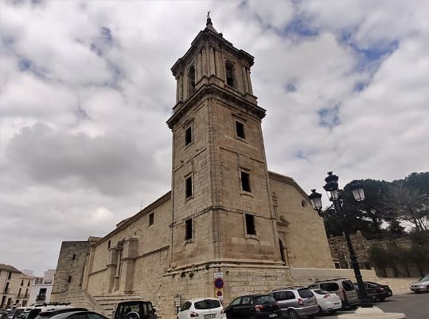
Church of Nuestra Señora de la Asunción, s.XVI.
6
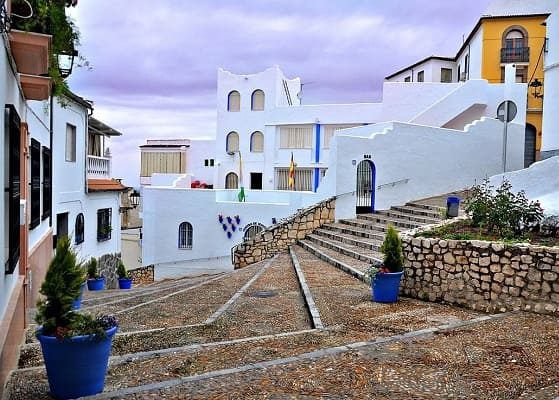
Patios and museums of Rute.
9
Day 4, crossing the province of Seville to reach Ronda (CLICK to continue)
February 28, 2022

![[Valid RSS]](https://www.onepointsync.com/wp-content/uploads/2016/08/valid-rss-rogers.png "Validate my RSS feed")